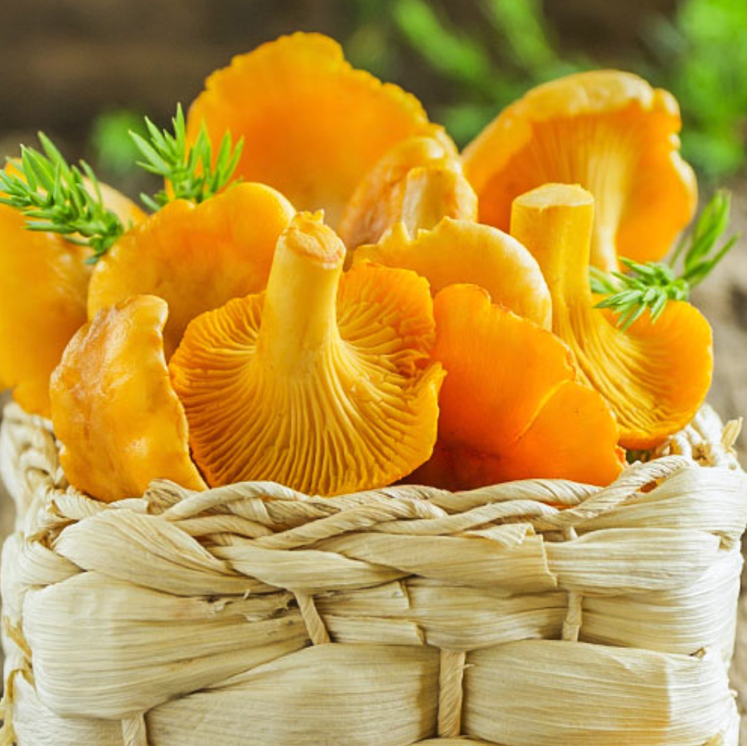

Song 1
Graži mūsų šeimynėlė šiandien susirinko,
Sėdi mūsų gaspadorius prie stalelio rimtas.
Su rankelėm plaukš plaukš, su kojelėm taukš taukš,
Labas rytas jums jums, vakarėlis mums mums.
Poem 2 Alyvos (means Lilacs) by Salomėja Nėris
Manęs dár nebùvo, -
Alyvos žydėjo -
Manes nebebus jau, -
Jos vėlei žydės. -
Ir kris jų lapeliai
Nuo saulės ir vėjo -
Kaip smėlio saujelės -
Ant mano peties.
